Orion UI · apps/scener · v1.1
3D scenes as text,
rendered while you wait.
Scener reads a scene from plain XML and renders it with real-time stencil shadows. An agent can write the file, check it for floating or intersecting parts, measure it, and get the picture back within a couple of seconds. No 3D application stays open in the background.
It is a lightweight alternative to driving Blender through Blender MCP when the job is a reference render, a game sprite or a storyboard frame.
- Executable
- 0.8 MB
- Installed bundle
- 19 MB
- Check 19,801 objects
- 0.53 s
- Shadowed 1600×1000 frame
- 2.7 s

<array>, 10 shadow-casting lamps and a low sun. 19,801 objects. Rendered with SSAO in 2.7 s, peak resident memory 314 MB.Built for the agent loop
Every command is a short process that reads the scene, answers and exits. An agent works the way it works with a compiler: edit the file, run the check, read the errors, render.
-
Write
Boxes, lathes, walls with windows and doors, floors, prefabs, characters with IK, cameras and lights. Units are centimetres. Expressions like
{S*(NX - 1)/2}work in any attribute. -
Check
--checkloads the scene without a window and reports unknown attributes, missing prefabs, unlit scenes, floating parts, interpenetration and z-fighting faces, each with a file and a line. -
Measure
--queryprints the built scene as JSON: every node with its world bounds and attach points, so the agent can place the next object against real numbers. -
Render
--renderwrites one clean image per camera, or an MP4 for a frame range. An agent that reads images checks its own work.
$ scener --check scenes/showcase/great_library.blks
warning: great_library.blks:123: <prefab source="study/pendant_lamp">
at line 123 floats: its base is 425.6 cm above the ground and it
touches nothing
warning: great_library.blks:43: <box> at line 43 and
<prefab source="study/chair"> at line 116 have overlapping faces
on one plane and will z-fight; offset or resize one
check great_library.blks: 0 errors, 24 warnings (19800 objects, 222 nodes)
# cords for the lamps, chairs lifted onto the runner
$ scener --check scenes/showcase/great_library.blks
check great_library.blks: 0 errors, 0 warnings (19801 objects, 223 nodes)
0.53 real 63 MB maximum resident$ scener --query scenes/showcase/great_library.blks
{
"kind": "scene", "units": "cm", "up": "z",
"bounds": {"min": [-1332, -750, -10],
"max": [1332, 750, 930]},
"cameras": [
{"name": "nave", "pos": [-1220, 0, 210],
"look": [400, 0, 260], "fov": 56},
…
],
"lights": [
{"kind": "point", "pos": [-928.5, 29.79, 110.5],
"radius": 520, "intensity": 2.4, "castShadows": true},
…
0.28 real 25 MB maximum residentA format you can read in a diff
One file per scene, prefabs in their own files. A <define> turns a group into a new tag with parameters, and an <array> repeats anything along a step. The library's forty stacks are twenty lines.
<!-- A stack is two rows of bookcases back to back, running from the aisle to the wall. -->
<define name="stack" doc="Double-faced stack, two tiers, five cases long">
<param name="x" doc="stack centre along the nave"/>
<param name="side" doc="+1 north of the aisle, -1 south"/>
<group>
<prefab source="study/bookshelf" pos="{${x} + 15.5} {${side}*(AISLE + 40)} 0" rot="0 0 90">
<array count="5" translation="{${side}*80} 0 0"/>
</prefab>
<prefab source="study/bookshelf" pos="{${x} - 15.5} {${side}*(AISLE + 40)} 0" rot="0 0 -90">
<array count="5" translation="{-${side}*80} 0 0"/>
</prefab>
<!-- …the same two rows again at z = 152 for the upper tier -->
<box pos="{${x}} {${side}*(AISLE + 200)} 308" size="70 404 8" material="dark_wood"/>
</group>
</define>
<stack x="{FIRST + 0*STEP}" side="1"/> <stack x="{FIRST + 0*STEP}" side="-1"/>
<stack x="{FIRST + 1*STEP}" side="1"/> <stack x="{FIRST + 1*STEP}" side="-1"/>
<!-- …eight more pairs -->
<prefab source="study/pendant_lamp" pos="{FIRST + 0.5*STEP} 0 560" scale="1.6 1.6 1.6">
<array count="10" translation="{STEP/1.6} 0 0"/>
</prefab>
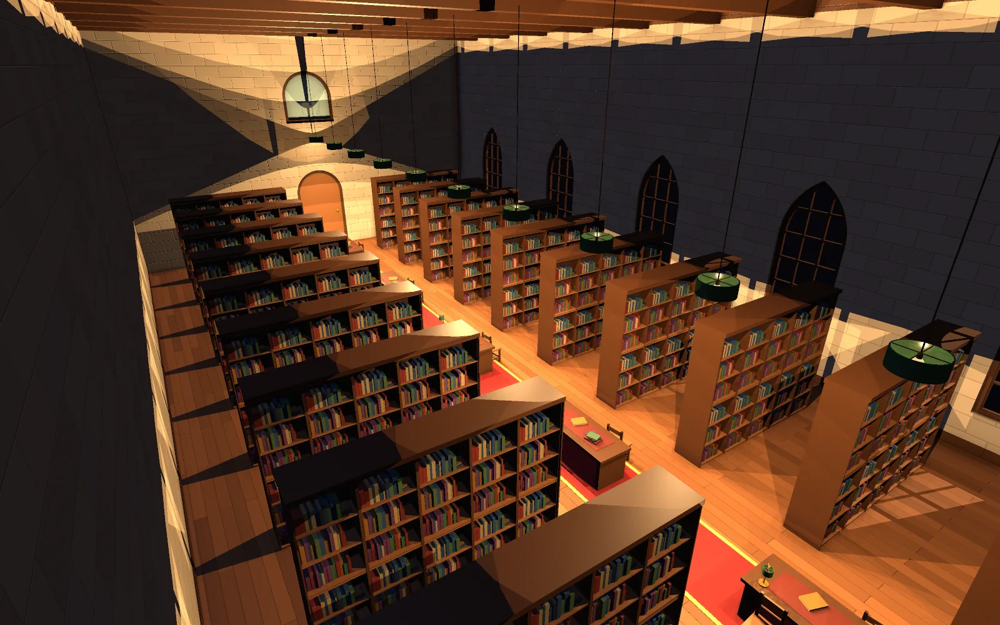

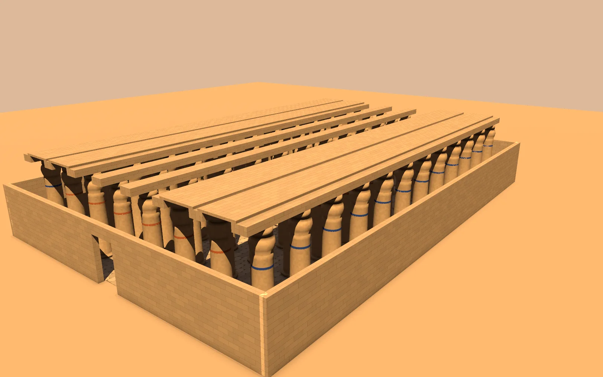
<!-- Papyrus column: torus base, tapering shaft, a closed-bud capital and its abacus. -->
<shape id="papyrus" closed="0" v="0 0 150 0 150 36 124 44 120 60 110 860 114 880
114 920 108 930 126 980 136 1030 126 1080 96 1118 112 1118 112 {CH} 0 {CH}"/>
<define name="column-row" doc="One row of NX columns along X at a given Y">
<param name="y"/>
<param name="band" default="ochre"/>
<group>
<lathe shape="papyrus" segments="40" pos="{X0} ${y} 2" rot="90 0 0" material="sandstone">
<array count="{NX}" translation="{S} 0 0"/>
</lathe>
<cylinder pos="{X0} ${y} 790" rot="90 0 0" radius="112" height="24" material="${band}">
<array count="{NX}" translation="{S} 0 0"/>
</cylinder>
</group>
</define>
<column-row y="{Y0 + 0*S}" band="lapis"/>
<column-row y="{Y0 + 1*S}"/>
<!-- …six more rows -->The same scene in Blender
We exported the library to glTF with scener --export, imported it into Blender 5.2 in background mode with the same camera, the same lights and the same 1600×1000 frame, and rendered it once with Eevee and once with Cycles. Both programs ran on the same Apple M1, one at a time.
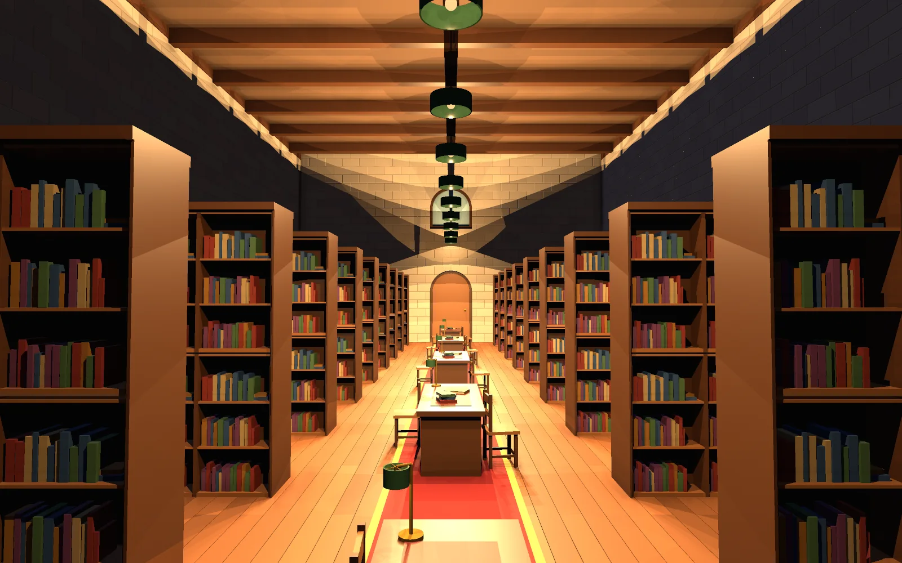
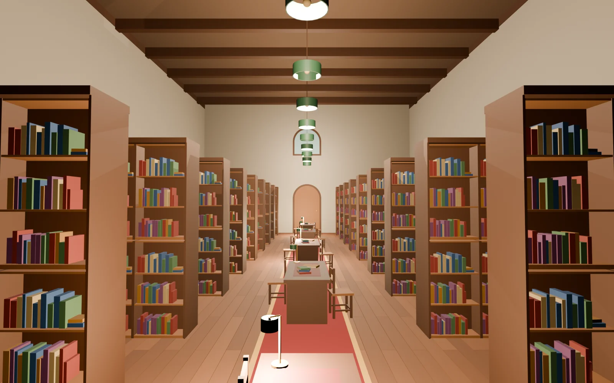
Where the time goes. Most of Blender's time is the glTF import of 19,819 objects, about 160 s on each run. With Blender MCP, Blender stays open and the scene is built once, so each later edit costs the render step: 19.4 s with Eevee and 115.1 s with Cycles, against 2.7 s for Scener. Scener has no import step because the XML is the scene; it rebuilds all of it on every run and is still faster.
Memory. An empty Blender process takes 244 MB before it loads anything. Scener's check of the whole library peaks at 63 MB, its JSON query at 25 MB.
What this is not. The light and material mapping into Blender is approximate, so the pictures differ in tone. Cycles is a path tracer and does things Scener does not try to do: soft shadows, bounced light, glass. Scener draws hard stencil shadows and screen-space ambient occlusion. That is enough for blocking out a room, a reference for painting over, a game sprite or a storyboard frame.
What it draws
One render per feature, straight out of scener --render with no paint-over. Times are wall-clock on an M1, loading included.

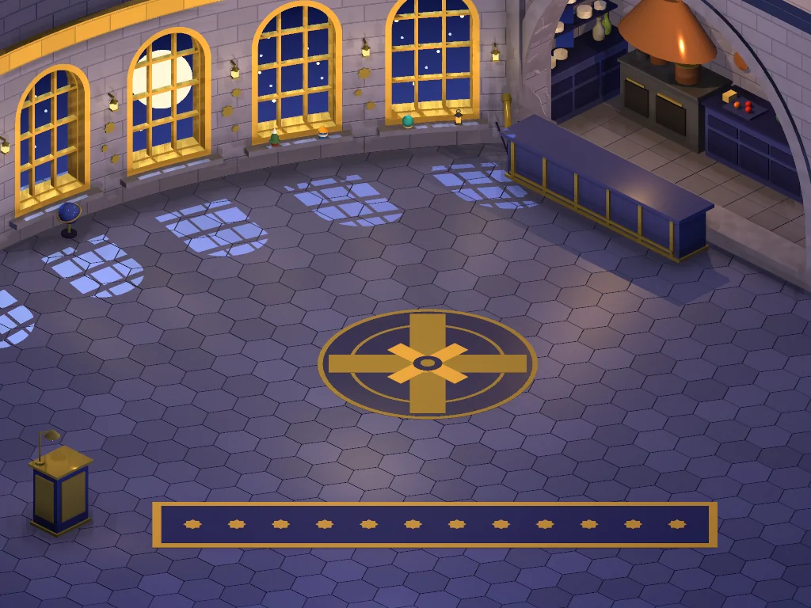

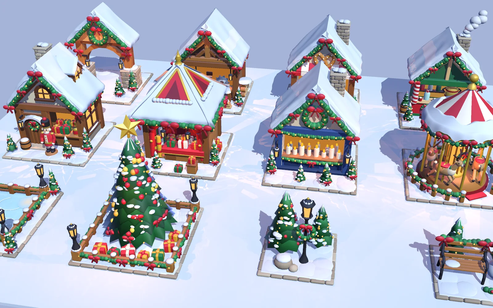

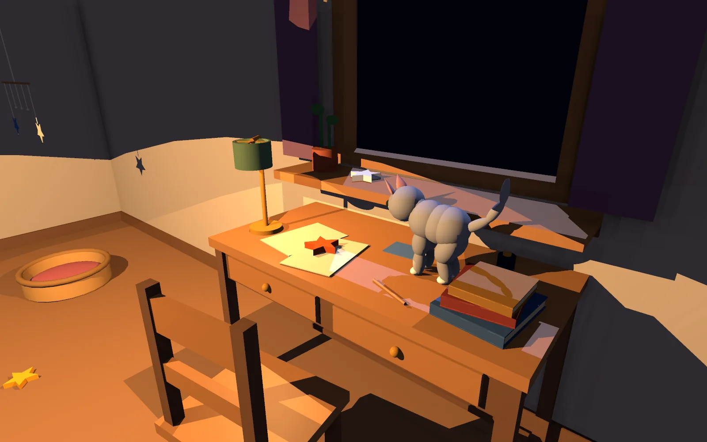

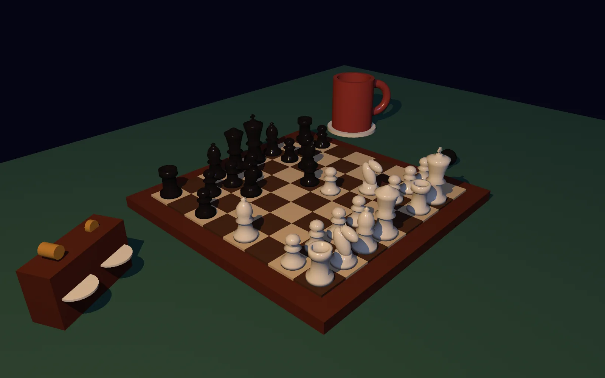

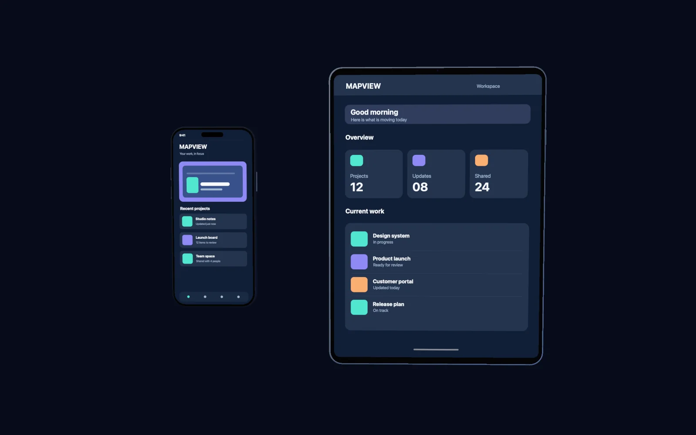

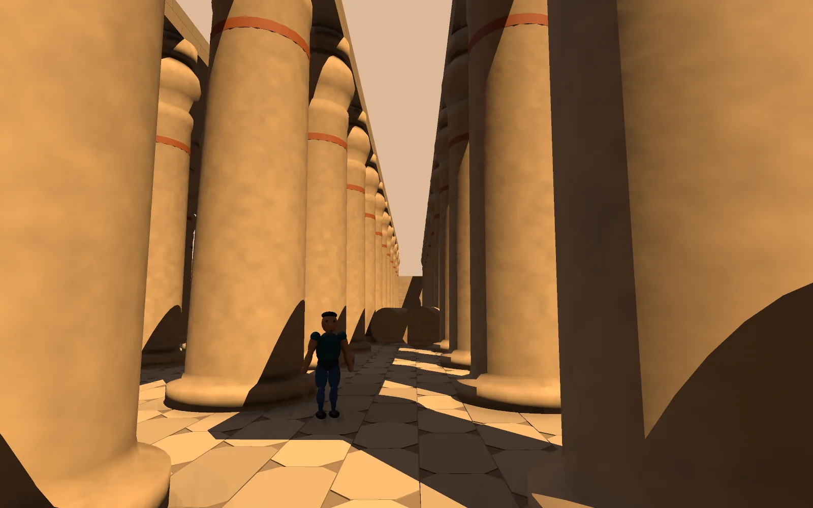
Reels
A .reel file lays type, callouts and live measurements over 3D scene layers and renders straight to MP4. Characters carry skeletons with FK, two-bone IK, procedural gaits and BVH motion capture.
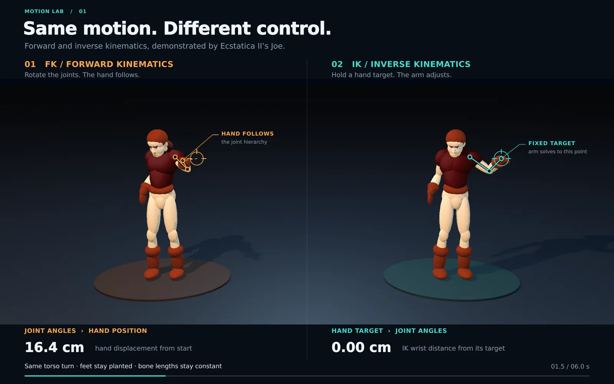
An editor for when a person takes over
The native Orion editor pairs a main toolbar for selection, transforms, and snapping with a tabbed Command Panel. Choose an object type to see its placement parameters, or select a scene node to inspect its properties and modifiers. Fly the viewport camera with W A S D.

scener christmas_market_buildings.blks --cam OverviewDownload Scener
Unpack the archive and launch Scener. For command-line use, run the executable from your terminal.
On macOS, move Scener to Applications. On Windows and Linux, run Scener from the extracted bin folder.
Rendering requires OpenGL. The Linux build also needs X11 or XWayland and libxml2.
Build from source
$ git clone https://github.com/corepunch/orion-ui
$ cd orion-ui && make scener
$ build/bin/scener apps/scener/scenes/showcase/great_library.blks$ scener --check room.blks --json --strict
$ scener --query room.blks --camera main
$ scener --render room.blks --size 1600x1000 --ssao
$ scener --render walk.blks --camera track --frames 0:7:24 --output walk.mp4
$ scener --export room.glb room.blksThe scene format reference documents every tag and attribute, and the CLI guide covers rendering, checking, reels and export. Both are written to be handed to an agent as they are.